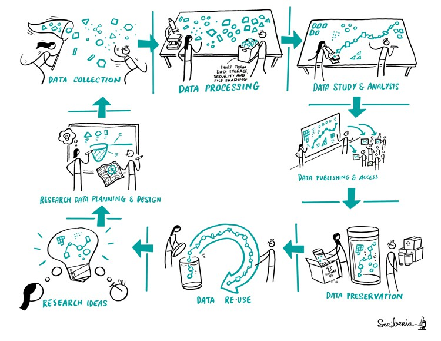
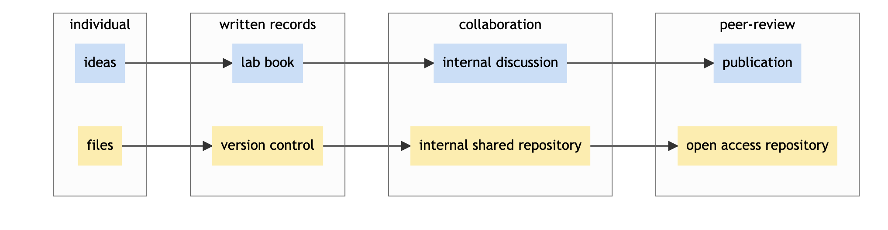

Image 1 of 1: ‘Two people with computational expertise holding a giant book towards two other people who conduct lab experiments. The book saya: how to apply data science in biology.’
Image 1 of 1: ‘Specicity of data science project. Five blocks (working online, large teams whose members have with specialised skills, writing code and re-using code) are placed around a central block where reproducible analysis is written. Data specifics by Julien Colomb CC-BY 4.0 ’
Figure 2
Image 1 of 1: ‘Researchers represented in a map indicating their journey to understand and apply computational approaches. Some may have just started their journey, some may have come far in the learning and some may have gained proficiency based on their research requirements.’
Figure 3
Image 1 of 1: ‘Researchers pour water on a tree, the water represents data science, the tree is the research.’
Figure 4
Image 1 of 1: ‘Shows a landscape with different checkpoints fpr data, code, tools and result each of which require reproducible practices. There is a woman explaining her reproducibility journey to help new people start their journey’
Figure 5
Image 1 of 1: ‘A house representing machine learing and AI is set upon bricks that one person is sliding below the house. On the bricks, we can read data science principles like open science, backups, reproducibiliy, and FAIR principles.’
Image 1 of 1: ‘A matrix showing data and analysis in two axis and iterating that reproducibility is when same analysis is applied to same data it gives same result.’
Figure 2
Image 1 of 1: ‘A figure explaining the concept of provenance: Silos labeled raw data, preprocessed data, analysis, and paper are connected and points representing data are flowing from the first to the last silo.’
Figure 3
Image 1 of 1: ‘Ways of capturing computational environments’
Figure 4
Image 1 of 1: ‘Contrast in project history management. On the left - choosing between ambiguosly named files. On the right - picking between successive versions (from V1 to V6).’
Figure 5
Image 1 of 1: ‘A figure showing manual versus GIT version control. On the left, we have one folder with a file named thesis_latest, a spreadsheet and one subfolder; on the right one folder with a file named thesis and a hidden folder called ".git". Below a screenshot of the spreadsheet on the left with some comments for each version saved in the subfolder; on the right a view of a Git software showing the same comments entered via Git, and a view of the difference added in one of the version. Figure by Julien Colomb, CC-BY 4.0.’
A figure showing manual (left) versus GIT (right)
version control.
Image 1 of 1: ‘The research process is represented as a perpetual cycle of generating research ideas, performing data planning and design, data collection, and data processing and analysis, publishing, preserving and hence, allowing re-use of data.’

Figure 2
Image 1 of 1: ‘drawing’
Figure 3
Image 1 of 1: ‘drawing’
A traditional Kanban for a collaborative computational project.
Keeping track of bugs and what everyone is working on.
Image 1 of 1: ‘An illustration of tidy data with three panels with three titles. Arrows are indicating the direction: vertical arrows for variables, as they should be indicated in columns, and horizontal arrows for observations , as they should be indicated in rows. In the third pannel, a circle is present on each cell to represent that there is one unique value per cell.’
An illustration of tidy data: variables are in
columns, observations in rows and there is one value per cell.
Figure 2
Image 1 of 1: ‘Illustration of backup need with the legend "a good advice". One big character is crying "always make a backup" loud. A second character is startled and let their computer labelled "all my work" fall on the floor and crash.’
Image 1 of 1: ‘This image shows three boxes with materials on top. The main box in the middle has 'identifiers' written on it with three discs on top of it that are labelled 'data sets'. Both boxes by their side have journal articles on top of them. An arrow on the top of the image points to these images as being 'Digital Object Identifiers'. There is text at the bottom of the image which says 'Persistent', 'Unique', 'Trusted'.’
Figure 3
Image 1 of 1: ‘similarity between publication and repository use’
For computational projects, releasing your work in an open repository
has parallels with publications.

Figure 4
Image 1 of 1: ‘zenodo entry example which is synchronised with GitHub.’


![A figure showing manual versus GIT version control. On the left, we have one folder with a file named thesis_latest, a spreadsheet and one subfolder; on the right one folder with a file named thesis and a hidden folder called ".git". Below a screenshot of the spreadsheet on the left with some comments for each version saved in the subfolder; on the right a view of a Git software showing the same comments entered via Git, and a view of the difference added in one of the version. Figure by Julien Colomb, CC-BY 4.0.](../fig/manualversioncontrol.jpg)

 A traditional Kanban for a collaborative computational project.
Keeping track of bugs and what everyone is working on.
A traditional Kanban for a collaborative computational project.
Keeping track of bugs and what everyone is working on.


 The Turing Way project illustration by Scriberia. Used under a CC-BY
4.0 licence. DOI: 10.5281/zenodo.3332807.
The Turing Way project illustration by Scriberia. Used under a CC-BY
4.0 licence. DOI: 10.5281/zenodo.3332807.


 The Turing Way
project illustration by Scriberia. Used under a CC-BY 4.0 licence. DOI:
10.5281/zenodo.3332807.
The Turing Way
project illustration by Scriberia. Used under a CC-BY 4.0 licence. DOI:
10.5281/zenodo.3332807.